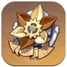

Furina
- Role: Sub DPS
- Rarity: ★★★★★
- Weapon Type: Sword
- Element: Hydro
| Best Weapon |
 Tome of the Eternal Flow
Tome of the Eternal Flow
|
|---|---|
| Replacement Weapons |
|
| Best Artifacts |  Marechaussee Hunter ×4 |
| Main Stats |
⏳ Sands: HP% üç∑ Goblet: Hydro DMG Bonus or HP% üëë Circlet: CRIT Rate/DMG |
| Sub Stats | HP% > CRIT Rate > CRIT DMG > Energy Recharge > Elemental Mastery |
Furina's Strengths and Weaknesses
| Strengths |
|
|---|---|
| Weaknesses |
|
Best Weapon
| Image | Name | Main Stat | Description |
|---|---|---|---|
|
Tome of the Eternal Flow | Base ATK 542 Crit DMG 88.9% |
HP is increased by 16%. When HP changes, Charged ATK DMG increases by 14% for 4s (max 3 stacks). Gain 8 Energy at 3 stacks (12s CD). |
Substitute Weapons
| Image | Name | Main Stat | Passive |
|---|---|---|---|
 |
Sacrificial Jade | Crit Rate 36.8% |
Jade Circulation : When not on the field for more than 5s, Max HP will be increased by 32% and Elemental Mastery will be increased by 40. These effects will be canceled after the wielder has been on the field for 10s. |
 |
Lost Prayer to the Sacred Winds | Crit Rate 33.1% |
Blessing Increases : Movement SPD by 10%. When in battle, gain an 8% Elemental DMG Bonus every 4s. Max 4 stacks. Lasts until the character falls or leaves combat. |
 |
Waveriding Whirl | Energy Recharge 61.3% |
Fangs Flying To and Fro : Decreases Swimming Stamina consumption by 15%. In addition, for 10s after using an Elemental Skill, Max HP is increased by 20%. For every Hydro Elemental Type character in the party, Max HP is increased by another 12%, and the maximum increase that can be achieved in this way is 24%. Can be triggered once every 15s. |
 |
(F2P) Prototype Amber | HP% 41.3% |
Gilding : Using an Elemental Burst regenerates 4 Energy every 2s for 6s. All party members will regenerate 4% HP every 2s for this duration |
Artifact Recommendations
| Position | Artifact | Artifact Bonuses |
|---|---|---|
| Best | Golden Troupe |
2-PC: Normal and Charged Attack DMG +15% 4-PC: When current HP increases or decreases, CRIT Rate will be increased by 12% for 5s. Max 3 stacks. |
| 2nd |
 Wanderer's Troupe
Wanderer's Troupe
|
2-PC: Increases Elemental Mastery by 80. 4-PC: Increases Charged Attack DMG by 35% if the character uses a Catalyst or a Bow. |
| 3rd |
 Heart of Depth
Heart of Depth
|
2-PC: Hydro DMG Bonus +15% 4-PC: After using Elemental Skill, increases Normal Attack and Charged Attack DMG by 30% for 15s. |
Artifact Stat Priority
 |
Main: Flat HP Sub: CRIT Rate / CRIT DMG / HP% / Energy Recharge |
 |
Main: Flat ATK Sub: CRIT Rate / CRIT DMG / HP% / Energy Recharge |
 |
Main: HP% Sub: CRIT Rate / CRIT DMG / Energy Recharge / Elemental Mastery |
 |
Main: Hydro DMG Bonus Sub: CRIT Rate / CRIT DMG / HP% / Energy Recharge |
 |
Main: CRIT DMG Sub: CRIT Rate / CRIT DMG / HP% / Energy Recharge |
üìä Stat for Neuvillette
| HP | ATK | Elemental Mastery | Energy Recharge | Crit Rate | Crit DMG |
|---|---|---|---|---|---|
| 35.000 | 1100 | - | 120% | 40% | 220% |
| 35.000 | 1100 | - | 120% | 40% | 300% ( W/ Signature Weapon ) |
Ascension Materials
×1 |
×9 |
×9 |
×6 |
×46 |
×168 |
×18 |
×30 |
×36 |
 ×420,000 |
||
üìò Talent Priority
- 1. Elemental Skill
- 2. Normal Attack
- 3. Elemental Burst
Furina Team
| Main-DPS | Sub-DPS | Sub-DPS/Support | Support |
|---|---|---|---|
 Neuvillette Neuvillette |
Furina |
 Kazuha Kazuha |
 Xilonen Xilonen |
| Neuvillette |
Furina |
Kazuha |
 Baizhu Baizhu |
| Neuvillette |
Furina |
Xilonen |
 Lan Yan Lan Yan |
üîÅ Best Rotation & Playstyle
Playstyle: Neuvillette shines as a hypercarry through repeated Charged Attacks that scale with Max HP. He thrives in teams that enable quick Hydro application and energy regeneration, especially when protected by shields or interruption resistance (C1).
üîÑ Recommended Rotation (Hypercarry Style):
- Start with Support Buffs (e.g., Bennett's Burst, Kazuha's Swirl, etc.).
- Apply Hydro resonance / elemental debuff using off-field supports (e.g., Furina, Kokomi, Yelan).
- Switch to Neuvillette:
- Use Elemental Skill if available for particles and minor AoE.
- Hold to Charged Attack – unleash Hydro beam for massive damage.
- Repeat Charged Attack 2–3 times if stamina & buffs allow.
- When energy is full, use Elemental Burst to heal Neuvillette & deal AoE damage.
- Repeat rotation after cooldowns reset.
Tip: Always stay aware of Neuvillette’s HP. His Charged Attacks drain HP slowly, but his Burst heals him. A healer or shielder in the team is highly recommended for safety and uptime.
✨ Constellation Effects
| Constellation | Effect |
|---|---|
| C1 | Neuvillette can use Charged Attacks without interruption, and his interruption resistance is greatly increased. |
| C2 | Increases DMG dealt by Charged Attacks based on his Max HP by an additional percentage. |
| C3 | Increases level of his Elemental Skill by +3 (Max upgrade level: 15). |
| C4 | When Neuvillette uses his Charged Attack, he regenerates 15 Energy over time. |
| C5 | Increases level of his Elemental Burst by +3 (Max upgrade level: 15). |
| C6 | After using Charged Attacks, Neuvillette gains a massive Crit DMG bonus and an extra Charged Attack wave. |
üìù Notes
Neuvillette scales with HP and is best used as an on-field DPS. Make sure his charged attacks are uninterrupted by using shielding or interruption resistance.